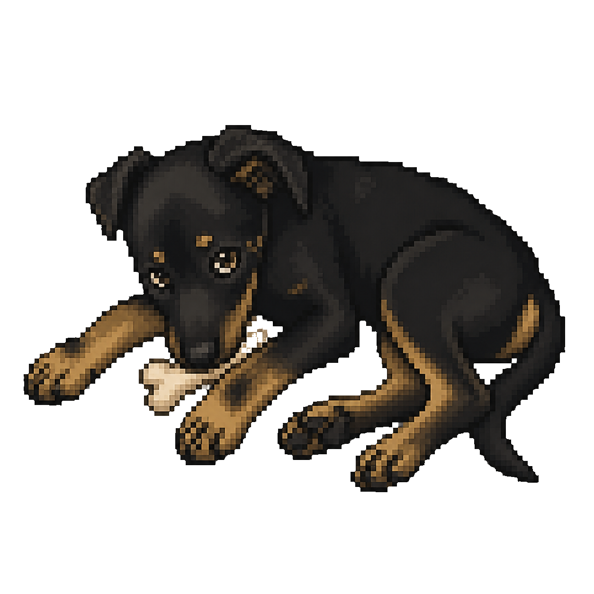

Classifique
Leitura, revisão e diagnóstico ficam em modo somente leitura. Implementação só começa com autorização objetiva.
Uma skill para o Codex
Um fluxo explícito para separar análise, implementação autorizada e revisão — com limites claros e evidências no final.

A Cacau só entra quando você invoca $cacau. O tipo de pedido define o modo, o escopo e a validação esperada.
Leitura, revisão e diagnóstico ficam em modo somente leitura. Implementação só começa com autorização objetiva.
Luna assume a tarefa lateral. Em mudanças, ela é a única escritora temporária dentro do escopo combinado.
Sol confere diff, testes afetados, riscos e pendências. Resultado aparente não substitui evidência observável.
Use o instalador de skills com a pasta cacau deste repositório. Depois, invoque a Cacau explicitamente no pedido.
$skill-installer Instale a skill Cacau deste repositório: https://github.com/cacauzuxa/cacau-codex-skill/tree/main/cacauA skill não troca o modelo principal, não promete que uma tarefa será mais rápida ou barata e não executa pagamentos, envios, publicações ou exclusões sem autorização explícita. Um timeout da janela de espera não é falha do agente; após a revisão, agentes concluídos ficam como histórico e agentes ativos órfãos são encerrados para liberar o slot.
Leia as regras completas da skill no GitHub ou abra o infográfico do fluxo.